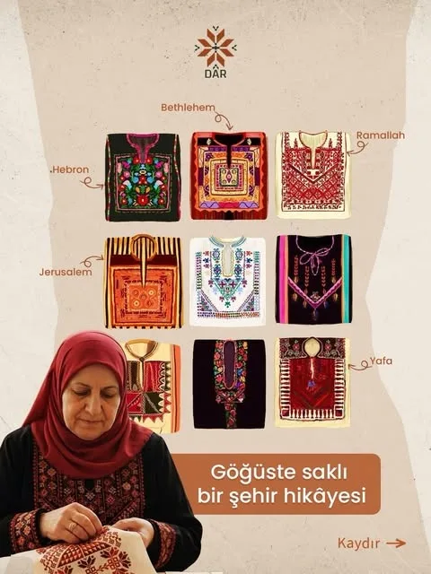
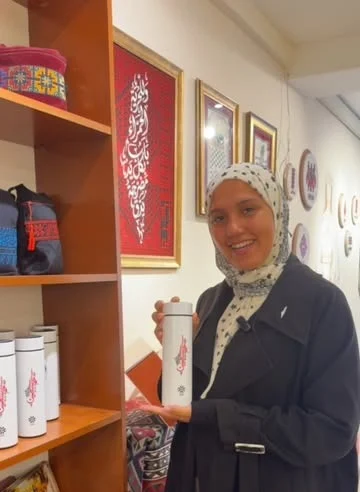
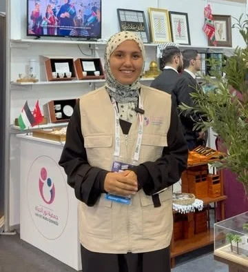

Dar
means home
In the Palestinian dialect, dar is the home. That is where our name comes from: a home in Istanbul that keeps Palestinian culture and traditions, with its door open to everyone who wants to know them.

We do not just display Palestinian heritage. We bring it back into everyday life as cultural, aesthetic and human value.
What we work for
- 01Supporting Palestinian craftswomen and craftsmenHandwork that reaches people who value it, and brings an income to the hands that made it.
- 02Heritage made to today's standardsTraditional motifs in pieces made for life today.
- 03Keeping cultural memory alive by makingEvery new piece saves an old motif from being lost.
- 04Heritage for people and organisationsFor the home, for gifts and for formal occasions.
- 05Bridges between culturesWe show what Palestinian culture shares with other cultures.
- 06Economic strength for Palestinian womenMany of our pieces are made by women in conflict areas, especially Gaza.
From Palestinian hands to your home
- Embroidered by Palestinian hands
Palestinian women, many of them in conflict areas and especially Gaza, embroider each piece with the motifs of Palestine's villages and cities.
- It reaches DAR
We gather the pieces at our centre in Istanbul, display them, and tell the story of every motif.
- It reaches you
A piece for your home, a gift for someone you love, or an identity for your organisation's occasion.
- And its good returns to Gaza
The proceeds of every piece support projects in Gaza, especially for women and children.

Behind every stitch, a story
DAR's embroidery collection is inspired by the original motifs of Palestine's villages and cities, and is made wholly or partly by skilled Palestinian craftswomen and craftsmen.

From DAR's InstagramA dress's chest piece tells its citySee the postFor everyone who carries Palestine in their heart
Come to us, or we come to you
The centre welcomes visitors from around the world to get to know Palestinian culture and its heritage.


Visit us
Altın Sk. No:11/ABahçelievler, İstanbul
We also take part in fairs across Türkiye, most recently the Istanbul Arab Book Fair. And every week we ask a question about Palestine on Instagram.
Carry a piece of the story
Every piece carries a motif and the name of its city, and its proceeds go to Gaza.